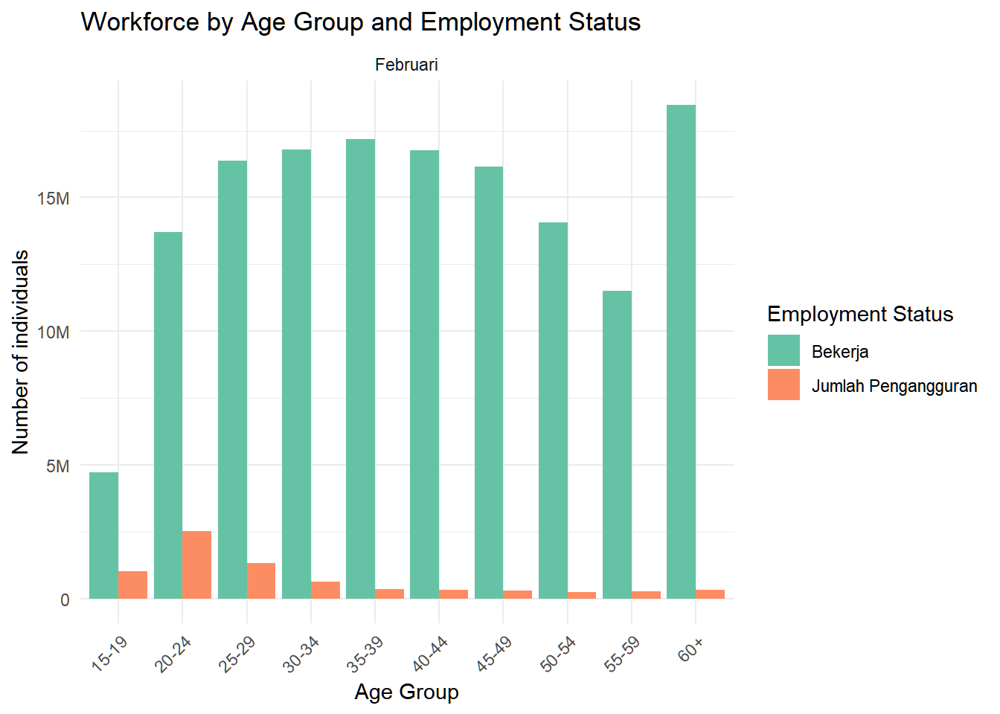

library(httr2)
library(tidyverse)Warning: package 'ggplot2' was built under R version 4.4.3Warning: package 'purrr' was built under R version 4.4.3July 8, 2023
I want to create an interactive plot to visualize the state of workforce in Indonesia based on age using BPS API. The goal is to provide a clear and informative visualization that allows users to explore the data and understand the trends in the workforce by age group. In this post, I will walk you through the process of retrieving the data from the BPS API, parsing the response, and creating an interactive plot using ggplot2 and plotly.
An easily accessible and interactive visualization of the workforce data can help researchers, policymakers, and the general public to better understand the trends and patterns in the workforce by age group. This can lead to more informed decisions and policies that address the needs of the aging workforce in Indonesia.
I am primarily inspired by the Eurostat homepage which allows researchers to track data about the aging workforce.
First, let’s load the necessary libraries to work with the BPS API and manipulate the data. We will use httr2 for making API requests and tidyverse for data manipulation and visualization.
The BPS API provides access to various datasets from the Badan Pusat Statistik (BPS) Indonesia (Bureau of Statistics Indonesia). To use the API, you need an API key, which you can obtain by registering on the BPS website.
First, login to your BPS account, fill out your profile details, and create an application in the “Application”. The API key is stored in the “App ID” column. Once you have the key, you can set it as an environment variable in your R session or in your .Renviron file. Read the BPS API Documentation for more details on how to use it.
Once you are ready with your API key, you can start making requests to the BPS API. The base URL for the API is https://webapi.bps.go.id/v1/api/list, and you can specify various parameters to filter the data you want to retrieve.
There are a few parameters that you can use to filter the data, such as model, lang, domain, var, and th. Unfortunately, the BPS API documentation does not provide a detailed explanation of these parameters, so you will need to experiment with them to find the data you are looking for.
One way to explore the available data is to find the data you want to retrieve using the BPS website, and inspect the JSON response in the browser’s developer tools. This will give you an idea of the structure of the data and the parameters you need for your API request.
For example, I want to extract the data for the “Angkatan kerja menurut golongan umur” (Workforce by Age Group) for the year 2025. In the webpage, click on the </> JSON button to view the endpoint API.
For example, the endpoint for the “Angkatan kerja menurut golongan umur” table is:
“https://webapi.bps.go.id/v1/api/list/model/data/lang/ind/domain/0000/var/698/th/125/key/[WebAPI_KEY]”
The [WebAPI_KEY] part of the URL is a placeholder for your actual API key. You need to replace it with your own API key to make the request work.
From this endpoint, we can modify our api request parameters using the req_url_path_append() function from the httr2 package. The parameters we will use are:
model <- "data" # model for "Data"
lang <- "ind" # language for "Bahasa Indonesia"
domain <- "0000" # domain for "Pusat"
var <- "698" # variable for table "Angkatan kerja menurut golongan umur"
th <- "125" # tahun 2025
api_response <- request(base_url) |>
req_url_path_append(
"model", model,
"lang", lang,
"domain", domain,
"var", var,
"th", 125,
"key", api_key
) |>
req_perform()Below is the response from the API request. The response is in JSON format, which we can parse to extract the data we need using resp_body_json() function.
List of 12
$ status : chr "OK"
$ data-availability: chr "available"
$ last_update : chr "2025-06-25 10:04:27"
$ subject :List of 1
..$ :List of 2
.. ..$ val : int 520
.. ..$ label: chr "Tenaga Kerja"
$ var :List of 1
..$ :List of 7
.. ..$ val : int 698
.. ..$ label : chr "Angkatan Kerja (AK) Menurut Golongan Umur"
.. ..$ unit : chr ""
.. ..$ subj : chr "Tenaga Kerja"
.. ..$ def : chr ""
.. ..$ decimal: int 2
.. ..$ note : chr "<p><br /></p><p><br /></p><p><br /></p><p><br /></p><p><br /></p><p><br /></p><p><br /></p><p><br /></p><p><br "| __truncated__
$ turvar :List of 4
..$ :List of 2
.. ..$ val : int 827
.. ..$ label: chr "Bekerja"
..$ :List of 2
.. ..$ val : int 828
.. ..$ label: chr "Jumlah Pengangguran"
..$ :List of 2
.. ..$ val : int 829
.. ..$ label: chr "Jumlah AK"
..$ :List of 2
.. ..$ val : int 830
.. ..$ label: chr "% Bekerja / AK"
$ labelvervar : chr "Golongan Umur"
$ vervar :List of 11
..$ :List of 2
.. ..$ val : int 1
.. ..$ label: chr "15-19"
..$ :List of 2
.. ..$ val : int 2
.. ..$ label: chr "20-24"
..$ :List of 2
.. ..$ val : int 3
.. ..$ label: chr "25-29"
..$ :List of 2
.. ..$ val : int 4
.. ..$ label: chr "30-34"
..$ :List of 2
.. ..$ val : int 5
.. ..$ label: chr "35-39"
..$ :List of 2
.. ..$ val : int 6
.. ..$ label: chr "40-44"
..$ :List of 2
.. ..$ val : int 7
.. ..$ label: chr "45-49"
..$ :List of 2
.. ..$ val : int 8
.. ..$ label: chr "50-54"
..$ :List of 2
.. ..$ val : int 9
.. ..$ label: chr "55-59"
..$ :List of 2
.. ..$ val : int 10
.. ..$ label: chr "60+"
..$ :List of 2
.. ..$ val : int 11
.. ..$ label: chr "Total"
$ tahun :List of 1
..$ :List of 2
.. ..$ val : int 125
.. ..$ label: chr "2025"
$ turtahun :List of 3
..$ :List of 2
.. ..$ val : int 189
.. ..$ label: chr "Februari"
..$ :List of 2
.. ..$ val : int 190
.. ..$ label: chr "Agustus"
..$ :List of 2
.. ..$ val : int 191
.. ..$ label: chr "Tahunan"
$ datacontent :List of 44
..$ 7698827125189 : int 16164793
..$ 2698828125189 : int 2527741
..$ 4698828125189 : int 619800
..$ 9698828125189 : int 262632
..$ 7698829125189 : int 16450825
..$ 3698828125189 : int 1319299
..$ 4698830125189 : num 96.4
..$ 6698828125189 : int 332935
..$ 1698827125189 : int 4724711
..$ 3698829125189 : int 17703447
..$ 5698828125189 : int 351093
..$ 11698830125189: num 95.2
..$ 1698830125189 : num 82.2
..$ 1698829125189 : int 5746898
..$ 6698829125189 : int 17107389
..$ 2698830125189 : num 84.4
..$ 11698829125189: int 153049487
..$ 1698828125189 : int 1022187
..$ 8698829125189 : int 14323589
..$ 11698827125189: int 145771180
..$ 8698828125189 : int 242764
..$ 5698827125189 : int 17177085
..$ 2698829125189 : int 16224936
..$ 11698828125189: int 7278307
..$ 4698827125189 : int 16799939
..$ 5698830125189 : int 98
..$ 4698829125189 : int 17419739
..$ 9698827125189 : int 11512218
..$ 2698827125189 : int 13697195
..$ 5698829125189 : int 17528178
..$ 10698828125189: int 313824
..$ 8698827125189 : int 14080825
..$ 9698830125189 : num 97.8
..$ 10698830125189: num 98.3
..$ 7698830125189 : num 98.3
..$ 7698828125189 : int 286032
..$ 6698827125189 : int 16774454
..$ 6698830125189 : num 98
..$ 3698827125189 : int 16384148
..$ 8698830125189 : num 98.3
..$ 9698829125189 : int 11774850
..$ 10698829125189: int 18769636
..$ 10698827125189: int 18455812
..$ 3698830125189 : num 92.5
$ related : list()Upon a closer inspection, the key format of the API response appears to be a concatenation of several values, including vervar, var, turvar, tahun, and turtahun. For example, the key 7698827125189 can be broken down as follows:
vervar: 7 -> “45-49 tahun”var: 698 -> “Angkatan kerja menurut golongan umur”turvar: 827 -> “Bekerja”tahun: 125 -> year “2025”turtahun: 189 –> month “February”To help parse these keys, we can create a function that extracts these values based on their known positions and lengths. Note that the keys length may vary slightly between 13-14 characters as the vervar values can be of values 1-11, but the rest of the values are fixed in length. Thus, we can use the substr() function to extract the values based on their positions by counting from right to left:
parse_key <- function(key) {
vervar_val <- substr(key, 1, nchar(key) - 12)
var_val <- substr(key, nchar(key) - 11, nchar(key) - 9)
turvar_val <- substr(key, nchar(key) - 8, nchar(key) - 6)
tahun_val <- substr(key, nchar(key) - 5, nchar(key) - 3)
turtahun_val <- substr(key, nchar(key) - 2, nchar(key))
return(
list(
vervar = vervar_val,
var = var_val,
turvar = turvar_val,
tahun = tahun_val,
turtahun = turtahun_val
)
)
}Let’s try this function with example keys. As we can see, the function correctly returns a list with the parsed values for each key:
Note that each value in the key corresponds to a specific label. We can create a named vector to map these values to their respective labels. For starters, let’s consider the vervar values, which represent age groups. The vervar is a list which contains 11 sub lists, each containing a value and a label. For example, the 15-19 age group has a value of 1 and a label of “15-19”.
[[1]]
[[1]]$val
[1] 1
[[1]]$label
[1] "15-19"
[[2]]
[[2]]$val
[1] 2
[[2]]$label
[1] "20-24"
[[3]]
[[3]]$val
[1] 3
[[3]]$label
[1] "25-29"
[[4]]
[[4]]$val
[1] 4
[[4]]$label
[1] "30-34"
[[5]]
[[5]]$val
[1] 5
[[5]]$label
[1] "35-39"
[[6]]
[[6]]$val
[1] 6
[[6]]$label
[1] "40-44"
[[7]]
[[7]]$val
[1] 7
[[7]]$label
[1] "45-49"
[[8]]
[[8]]$val
[1] 8
[[8]]$label
[1] "50-54"
[[9]]
[[9]]$val
[1] 9
[[9]]$label
[1] "55-59"
[[10]]
[[10]]$val
[1] 10
[[10]]$label
[1] "60+"
[[11]]
[[11]]$val
[1] 11
[[11]]$label
[1] "Total"We can extract these values and labels from the API response and create a named vector for easy reference. We can use the map_df() and pull() function from the purrr package to iterate over the list and extract the values and labels:
age_group <- api_response_list$vervar |> map_dfr(\(x) x) |> pull(label, val)
employment_status <- api_response_list$turvar |> map_dfr(\(x) x) |> pull(label, val)
time_category <- api_response_list$turtahun |> map_dfr(\(x) x) |> pull(label, val)
year <- api_response_list$tahun |> map_df(\(x) x) |> pull(label, val)
# Sample
age_group 1 2 3 4 5 6 7 8 9 10
"15-19" "20-24" "25-29" "30-34" "35-39" "40-44" "45-49" "50-54" "55-59" "60+"
11
"Total" Next, we can extract the data content using enframe() to create a data frame with the values and their corresponding labels. The datacontent field contains the actual data values, which we can convert into a data frame.
We can then join the parsed values with the labels to create a complete data frame with all the necessary information. We will use mutate() to convert the key and value columns to character and double types, respectively, and then apply the parse_key() function to extract the parsed values.
datacontent_labeled <- datacontent |>
mutate(
key = as.character(key),
value = as.double(value),
parsed_key = map(key, parse_key)
) |>
unnest_wider(parsed_key) |>
select(-c("key", "var")) |> # removed unused column
mutate(
vervar = age_group[vervar],
turvar = employment_status[turvar],
turtahun = time_category[turtahun],
tahun = year[tahun]
) |>
rename(
age_group = vervar,
employment_status = turvar,
time_category = turtahun,
year = tahun
)We can see the result is a nice table with the parsed values and their corresponding labels.
# A tibble: 6 × 5
value age_group employment_status year time_category
<dbl> <chr> <chr> <chr> <chr>
1 16164793 45-49 Bekerja 2025 Februari
2 2527741 20-24 Jumlah Pengangguran 2025 Februari
3 619800 30-34 Jumlah Pengangguran 2025 Februari
4 262632 55-59 Jumlah Pengangguran 2025 Februari
5 16450825 45-49 Jumlah AK 2025 Februari
6 1319299 25-29 Jumlah Pengangguran 2025 Februari We can further clean this data by assigning factors to the age groups and employment status for better visualization, and then reorder the columns to have a more logical order.
I decided to filter the “% Bekerja / AK” from the employment_status column as it shows percentage of the workforce that is employed, which is a different unit of measurement compared to the other columns that show counts of individuals in each age group. Additionally, I filter the “Total” age group as it is not relevant for our analysis.
Finally, we can select the relevant columns and ensure that the age_group column is ordered correctly for visualization purposes.
datacontent_cleaned <- datacontent_labeled |>
filter(
!employment_status %in% c("Jumlah AK","% Bekerja / AK"),
age_group != "Total",
) |>
mutate(
age_group = factor(age_group, levels = c(
"15-19", "20-24", "25-29", "30-34", "35-39",
"40-44", "45-49", "50-54", "55-59", "60+", "Total"
), ordered = TRUE
),
time_category = factor(time_category, levels = c(
"Januari", "Februari", "Maret", "April",
"Mei", "Juni", "Juli", "Agustus",
"September", "Oktober", "November", "Desember",
"Tahunan"
)),
employment_status = factor(employment_status, levels = c(
"Bekerja", "Jumlah Pengangguran", "Jumlah AK", "% Bekerja / AK"
)),
) |>
select(
year, time_category, employment_status, age_group, value
) |>
arrange(
year, time_category, employment_status, age_group
)We can now view the cleaned data frame to see the final result.
# A tibble: 10 × 5
year time_category employment_status age_group value
<chr> <fct> <fct> <ord> <dbl>
1 2025 Februari Bekerja 15-19 4724711
2 2025 Februari Bekerja 20-24 13697195
3 2025 Februari Bekerja 25-29 16384148
4 2025 Februari Bekerja 30-34 16799939
5 2025 Februari Bekerja 35-39 17177085
6 2025 Februari Bekerja 40-44 16774454
7 2025 Februari Bekerja 45-49 16164793
8 2025 Februari Bekerja 50-54 14080825
9 2025 Februari Bekerja 55-59 11512218
10 2025 Februari Bekerja 60+ 18455812Now that we have the cleaned data, we can create an interactive plot to visualize the workforce by age group and employment status. We will use ggplot2 for the initial plot. We use the scales::comma() function to format the y-axis labels with commas for better readability.
ggplot(datacontent_cleaned, aes(
x = age_group, y = value,
fill = employment_status)
) +
geom_col(position = "dodge") +
facet_wrap(~ time_category, scales = "free_y") +
labs(
title = "Workforce by Age Group and Employment Status",
x = "Age Group",
fill = "Employment Status"
) +
scale_y_continuous(
"Number of individuals",
labels = scales::label_number(scale_cut = scales::cut_long_scale())
) +
scale_fill_brewer(palette = "Set2") +
theme_minimal() +
theme(
axis.text.x = element_text(angle = 45, hjust = 1)
)
What is great about this plot is that it allows us to see the distribution of the workforce by age group and employment status across different months of the year.
Interestingly, we found that the workforce in the 60+ age group is quite significant, with a total of 18.455.812 individuals employed in February 2025. This is a notable finding as it indicates that the aging workforce in Indonesia is still actively participating in the labor market.